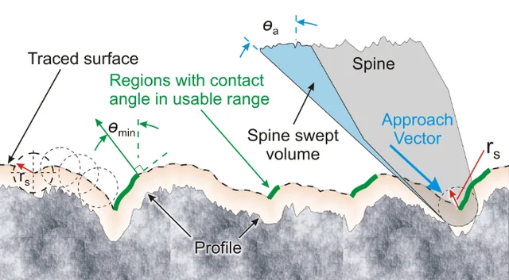
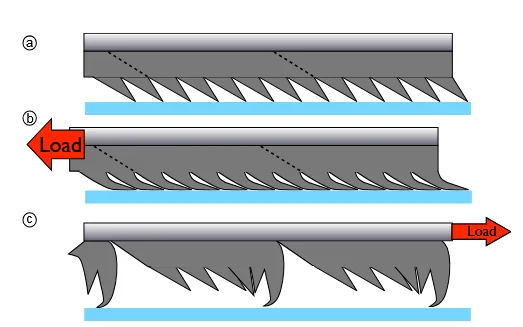
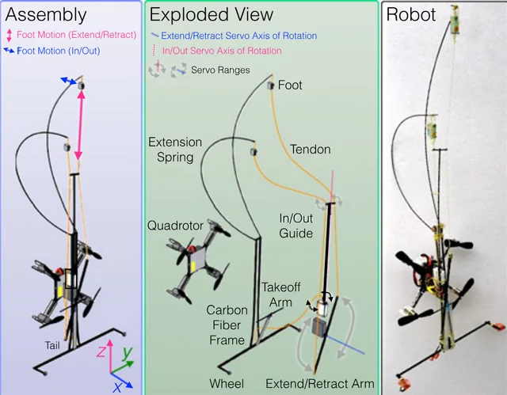
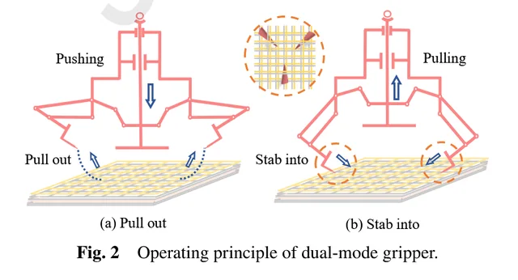
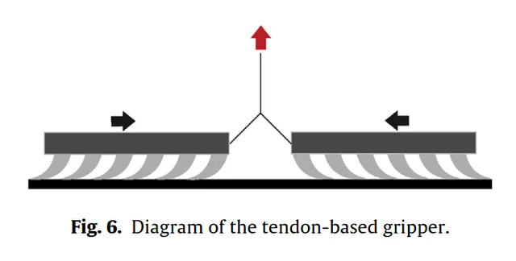
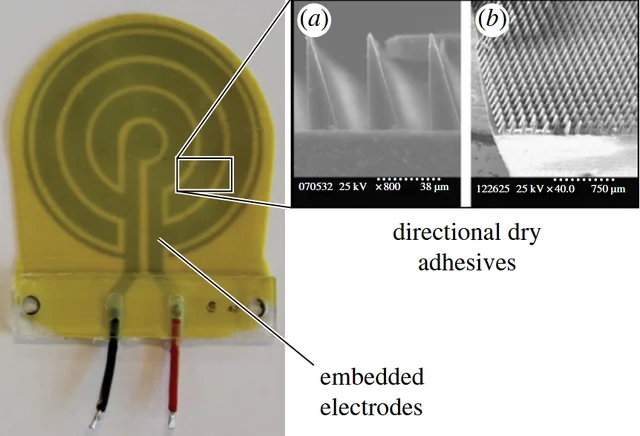
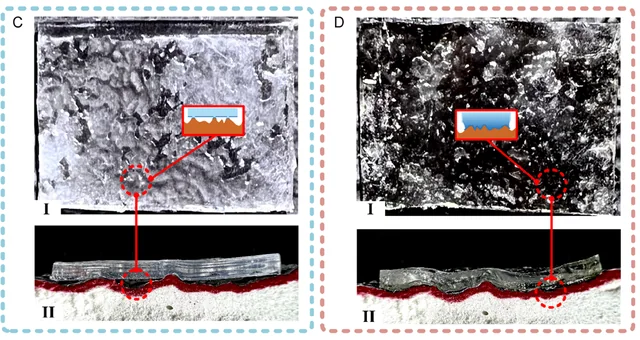
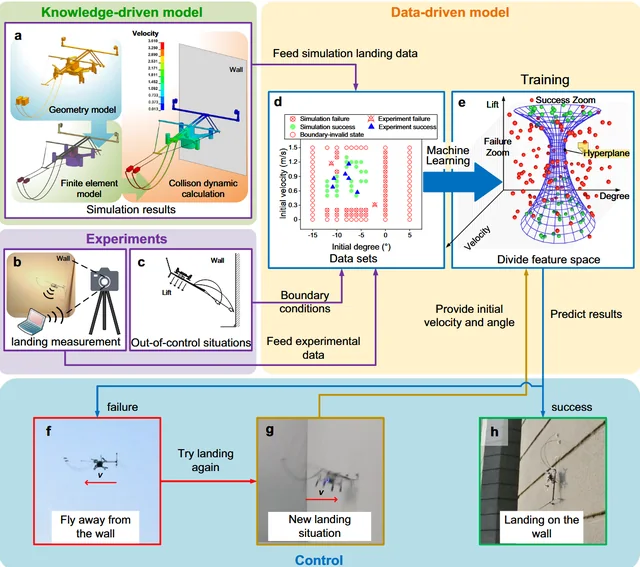
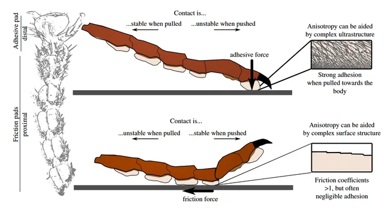

仿生攀爬与黏附接触力学 · 论文精读专栏
围绕微型壁面攀爬机器人、微刺阵列与仿生干黏附机理、软体/双稳态可变刚度夹爪，系统精读整理的 13 篇前沿学术文献笔记（涵盖 IEEE T-RO、IJRR、ICRA、Science Advances、Nature Communications 等）。
从一张图进入机制与实验。配图可在对应笔记中放大，查看图中标注与细节。

Asbeck2006 · 顺应性微刺阵列攀爬硬质垂直面
系统建立微刺与粗糙表面的二维接触仿真模型。指出 Ra/Rq 均方根粗糙度不代表挂持力，揭示刺尖半径与可用微凸体（asperity）密度的尺度权衡，确立顺应性阵列设计原则。

Hawkes2015 · 百倍自重干黏附垂直攀爬与各向异性分析
利用方向性 PDMS 微楔剪切激活机制，实现 9g 微型机器人挂载百倍自重。提出各向异性比指标 alpha = Anp / Ap，阐明换步摆动阶段压低反向脱附阻力 Anp 的关键结构。

Pope2017 · SCAMP 室外垂直粗糙面多模态栖停与攀爬 MAV
微型飞行器栖停后在室外混凝土/砖墙上重定位攀爬。核心创新：弹性微刺螺旋勾爪，以及巧妙利用旋翼残余推力作为法向微刺预紧辅助力，完成触壁动能缓冲吸收。

Fang2026 · 仿生双模夹爪（微重力攀爬机器人 SPACE-1）
面向微重力航天器外壁异质表面：刚性金属面使用 PU/SiO2 干黏附，柔性 MLI 隔热层使用倒刺机械穿刺。通过偏置曲柄五杆机构实现爪刺精确插入与退出轨迹控制。

Modabberifar2018 · SMA 丝驱动仿壁虎方向性干黏附夹爪
利用 SMA 丝热致收缩替代笨重舵机直接施加剪切载荷，1s 内激活干黏附，断电靠弹簧与自然冷却复位。提出三臂单根 SMA 串联均载拓扑，解决多臂张力不一致难题。

Ruffatto2014 · 静电-仿壁虎微楔混合粘附（EDA 复合结构）
在厚度方向将静电电极与方向性 PDMS 微楔结合（EDA）：静电场提供法向主动贴合预载建立分子接触，微楔提供大剪切承载，显著增强对粗糙及非理想表面的容忍度。

Yu2024 · 仿壁虎机器人新型可变刚度双稳态黏附足爪
面向微重力航天器表面：基于双稳态预应力壳脚趾与低弹性模量改性 PU 黏附层。伸展模式实现高刚度贴附承载，卷曲模式大幅缩小有效接触面实现低撕裂剥离脱附。
Hu2021 · 平面干黏附、软驱动与微刺集成软夹爪
中科大董二宝老师团队成果：将软体执行器、平面软 PDMS 黏附垫与微刺-弹簧-SMA coil 并联集成在单个柔性指爪内，实现光滑物、粗糙物与薄片的多策略鲁棒包络抓取。
Hu2023 · 软体模块化攀爬机器人 Smcbot 与足端库
中科大董二宝老师团队成果：提出 SMA 软体躯干与可替换足端模块库（微刺、干黏附、电磁、吸盘），系统论证了多介质/异质表面环境中根据壁面材质匹配足端物理机制的必要性。
Hu2019 · 仿尺蠖微刺阵列软体攀爬机器人
中科大董二宝团队早期原型：SMA 驱动弹簧钢-PDMS 柔顺足与伸缩躯干，足端嵌入微刺阵列，在粗糙曲面、泡沫曲面与软质管道表面演示低速尺蠖爬行。
Liu2026 · 仿生跨介质壁面攀爬机器人与接触适应性
实现水下与陆地水陆双介质跨越攀爬，通过自适应接触黏附机制克服液体阻力与浮力干扰，展示了仿生机构在极端界面动力学下的高鲁棒性。

Shen2025 · 机器学习预测微型飞行机器人垂直壁面栖停
构建轻量机器学习代理模型取代高成本多体碰撞动力学仿真，毫秒级高效预测飞行器不同进近角、接触速度下的触壁栖停成功率，指导栖停控制器设计。

Federle2019 · 运动中动态生物粘附与剥离力学机制综述
剑桥大学经典综述：系统总结昆虫与壁虎在高速运动中的动态方向性粘附控制、接触角依赖性与剥离（peeling）能量释放率模型，为人工倾斜柱制造提供力学地基。